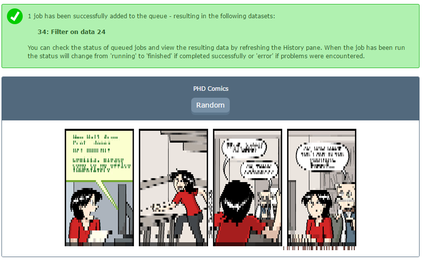
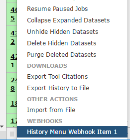

Galaxy Webhooks
Contributors
Questions
What are Galaxy Webhooks?
How to create them?
Objectives
Discover what Galaxy Webhooks are
Be able to create Webhooks
Be able to add a Galaxy Webhook in a Galaxy instance
last_modification Published: Apr 3, 2017
last_modification Last Updated: Jun 24, 2024
What are Galaxy Webhooks?
A system which can be used to attach new functionalities to predefined entry points in the Galaxy interface.
An accessible way to make isolated customisations to a Galaxy instance.
Entry point: masthead

Adds item to the top menu.
Entry point: tool/workflow submission

Shown after tool or workflow execution.
Entry point: tool-menu
Adds an entry to the tool form menu.
Entry point: history-menu

Adds an entry to the history menu.
What is a webhook made of?
- a config file in YAML format:
config/<NAME>.yml - optional: A Python helper file with access to the Galaxy
transobjecthelper/__init__.py- provides an API call at
/api/webhooks/<WEBHOOK_NAME>/get_data
- optional: Additional
JSandCSScodestatic/script.jsstatic/styles.css
Example configuration YAML
<span id="trans_object
type:"><i class="fas fa-link" aria-hidden="true"></i> trans_object
type:
</span>
- masthead
activate: true
icon: fa-user
tooltip: Show Username
function: >
$.getJSON("/api/webhooks/trans_object/get_data", function(data) {
alert('Username: ' + data.username);
});
Definition of the configuration options
| Argument | Description |
|---|---|
name |
Name of the Webhook (and API call) |
type |
Entry point. tool/workflow/masthead/history-menu. More might be available in future |
activate |
(De-)Activates the Webhook. true/false |
icon |
Icon to show for a masthead plugin. Full list of available icons here |
tooltip |
Tooltip to show for masthead plugins |
function |
JavaScript code to run when masthead button is clicked |
Example __init__.py
def main(trans, webhook):
if trans.user:
user = trans.user.username
else:
user = 'No user is logged in.'
return {'username': user}
The return value can be read with a call to /api/webhooks/WEBHOOK_NAME/get_data
Want to integrate Webhooks in your Galaxy instance?
- Copy your Webhook to your Webhook directory on your Galaxy instance
- default:
config/plugins/webhooks - configurable via
webhooks_diringalaxy.yml
- default:
- Restart Galaxy. While developing, changes at the
__init__.pyfile will be active immediately
Want to contribute?
- Create Webhooks and share them with the world!
- on the main Galaxy repository
- Improve the Webhooks implementation
- enhance existing entry points
- add additional ones …
- Improve the documentation or training material
Developing the Webhooks implementation
- Webhooks initialisation:
lib/galaxy/webhooks/__init__.py - JavaScript logic:
client/galaxy/scripts/mvc/webhooks.js - Entry points
client/galaxy/scripts/mvc/tool/tool-form.jsclient/galaxy/scripts/mvc/tool/tool-form-composite.jsclient/galaxy/scripts/mvc/history/options-menu.jsclient/galaxy/scripts/layout/menu-js
- API:
lib/galaxy/webapps/galaxy/api/webhooks.pylib/galaxy/webapps/galaxy/buildapp.py
Key Points
- A Galaxy Webhook provides an easy way to customize the Galaxy UI with plugins
- Right now there are 4 entry points: tool, workflow, masthead, history-menu
- With a minimal amount of code you can extend Galaxy's user-interace.
Thank you!
This material is the result of a collaborative work. Thanks to the Galaxy Training Network and all the contributors! Tutorial Content is licensed under
Creative Commons Attribution 4.0 International License.
Tutorial Content is licensed under
Creative Commons Attribution 4.0 International License.